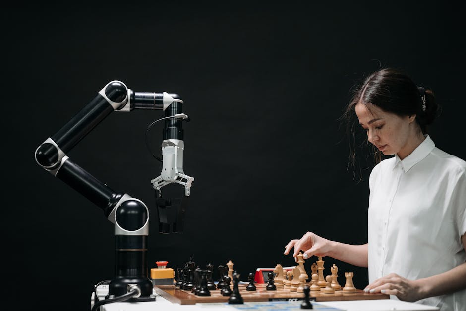

Imagine a world where robots don't just follow pre-programmed paths, but actually *see* and *understand* their surroundings, just like you do. What if they could recognize objects, navigate complex environments, and even interact with us based on our gestures? This isn't science fiction anymore! Welcome to the fascinating realm of Computer Vision – the technology that gives robots the gift of sight and perception, transforming them from simple machines into intelligent companions and powerful tools.
What is Computer Vision?
At its core, Computer Vision (CV) is a field of Artificial Intelligence (AI) that enables computers and robotic systems to derive meaningful information from digital images, videos, and other visual inputs. Think of it as teaching a computer to "see" and "interpret" the world visually. Just as your brain processes signals from your eyes to understand what you're looking at, computer vision algorithms process pixel data to identify objects, understand scenes, and even detect emotions.
For robots, this means moving beyond simple sensors like ultrasonic distance detectors. Instead of just knowing "there's an obstacle ahead," a robot equipped with computer vision can know "that's a chair," "that's a human," or "that's the specific part I need to pick up."
Why is Computer Vision Important for Robotics?
Robots without vision are like explorers navigating a new land blindfolded. They can perform repetitive tasks in highly controlled environments, but struggle with anything unpredictable. Computer Vision changes this entirely, unlocking a vast array of possibilities:
- Autonomy: Robots can make decisions based on what they see, leading to more independent and adaptable behaviour.
- Precision: Vision allows robots to perform tasks with incredible accuracy, such as picking up tiny components or performing delicate surgery.
- Safety: By recognizing humans and obstacles, robots can operate more safely in shared spaces with people.
- Adaptability: Robots can adjust to changes in their environment, like objects being moved or lighting conditions changing.
- Interaction: CV enables robots to understand human gestures, facial expressions, and even gaze, leading to more natural human-robot interaction.
"The human eye is a wonderful thing, but the robotic eye, powered by computer vision, is a gateway to a future where machines perceive and interact with our world in ways we're only just beginning to imagine."
How Do Robots "See"? The Basics of Computer Vision
Giving sight to a robot involves several key steps, mimicking how our own visual system works:
1. Image Acquisition
First, the robot needs "eyes" – cameras! These can be standard 2D cameras, depth cameras (like those used in smartphones for facial recognition, which capture 3D information), or even thermal cameras. The camera captures light and converts it into digital data, a grid of pixels, much like a digital photograph.
2. Image Processing
Once the image is acquired, it's rarely perfect. It might be blurry, too dark, too bright, or noisy. Image processing techniques clean up the image, enhance its features, and prepare it for analysis. This can involve:
- Filtering: Removing noise or smoothing edges.
- Enhancement: Adjusting brightness and contrast.
- Segmentation: Dividing the image into different regions or objects.
3. Feature Extraction
This is where the robot starts looking for specific "clues" in the image. Instead of analyzing every single pixel, which is too much data, algorithms identify important features like:
- Edges: Lines and boundaries that define shapes.
- Corners: Points where edges meet.
- Textures: Patterns and surface characteristics.
- Colors: Distinct color regions.
These features help the robot distinguish one object from another.
4. Object Recognition and Understanding
Finally, the extracted features are fed into sophisticated algorithms, often powered by Machine Learning and Deep Learning (especially Convolutional Neural Networks or CNNs), to identify what the robot is looking at. This step involves:
- Object Detection: Locating and drawing bounding boxes around objects in an image (e.g., "There's a car here, and a person there").
- Object Recognition: Identifying what those objects are (e.g., "That's a red ball," "That's my charging station").
- Scene Understanding: Interpreting the overall context of the image (e.g., "This is a living room," "This is a factory floor").
Key Applications of Computer Vision in Robotics
Computer Vision is revolutionizing nearly every sector where robots are deployed:
Object Detection and Recognition
This is perhaps the most direct application. From robotic arms in factories picking and placing specific parts on an assembly line to autonomous agricultural robots identifying ripe fruits for harvesting, CV allows robots to interact intelligently with objects in their environment.
Navigation and Mapping
Autonomous mobile robots, like self-driving cars or warehouse robots, use computer vision (often combined with other sensors like LiDAR) to build maps of their surroundings, localize themselves within those maps, and navigate safely around obstacles and people. This is crucial for applications like delivery robots or exploration rovers.
Quality Control and Inspection
In manufacturing, robots with CV systems can inspect products for defects with incredible speed and accuracy, far surpassing human capabilities. They can spot tiny scratches, missing components, or incorrect labels, ensuring high-quality output.
Human-Robot Interaction (HRI)
Imagine a robot understanding your hand gestures to fetch a tool, or recognizing your face and greeting you by name. Computer Vision makes this possible, enabling more intuitive and natural interactions between humans and robots, particularly in service robotics and collaborative robots (cobots).
Getting Started with Computer Vision: Your First Steps
The good news is that getting started with Computer Vision is more accessible than ever! Here's how you can begin your journey:
- Learn Python: Python is the go-to language for AI and Computer Vision due to its simplicity and vast libraries.
- Explore OpenCV: Open Source Computer Vision Library (OpenCV) is a powerful, free library with thousands of optimized algorithms for image and video analysis. It's the standard for CV development.
- Experiment with Basic Concepts: Start with simple tasks like loading images, changing colors, detecting edges, and then move to more complex topics like object detection.
- Use a Raspberry Pi or Arduino with a Camera: These low-cost microcontrollers are excellent platforms for hands-on robotics and CV projects.
Here's a super simple Python code example using OpenCV to load and display an image:
import cv2 # Import the OpenCV library
# Load an image from your computer
# Make sure 'robot_arm.jpg' is in the same folder as your Python script,
# or provide the full path to the image file.
image = cv2.imread('robot_arm.jpg')
# Check if the image was loaded successfully
if image is not None:
# Display the image in a window titled 'Our Robot Friend'
cv2.imshow('Our Robot Friend', image)
# Wait indefinitely until a key is pressed
# This keeps the window open until you close it manually or press a key.
cv2.waitKey(0)
# Close all OpenCV windows
cv2.destroyAllWindows()
else:
print("Error: Could not load image. Make sure 'robot_arm.jpg' exists in the correct path!")
To run this code, you'll need Python and OpenCV installed (`pip install opencv-python`). Save the code as a `.py` file, place an image named `robot_arm.jpg` in the same directory, and run it! You'll see your image pop up in a new window.
The Future is Bright (and Visible!)
Computer Vision is a rapidly evolving field, constantly pushing the boundaries of what robots can do. From enhancing augmented reality experiences to powering the next generation of intelligent automation, the possibilities are endless. As you delve deeper, you'll discover how techniques like deep learning are making robots even smarter, enabling them to learn from vast amounts of visual data and perform tasks with unprecedented accuracy.
Conclusion
Computer Vision is truly the superpower that gives robots their "eyes" and the ability to understand our complex visual world. It's a field brimming with innovation and offers incredible opportunities for young minds eager to shape the future of robotics. Whether you're interested in building autonomous vehicles, creating smarter factory robots, or developing helpful companions, understanding computer vision is a crucial step.
Ready to give your robots the gift of sight? Explore the exciting world of Computer Vision with MakerWorks! Join our workshops, projects, and courses to get hands-on experience and turn your ideas into reality. The future is watching, and it's built by makers like you!